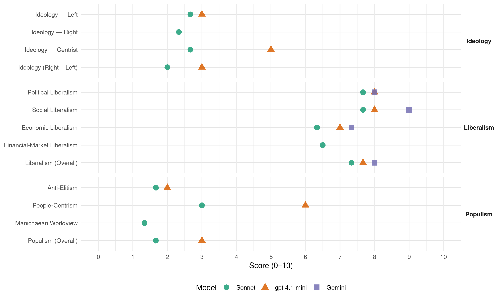

SMK/MKP (Slovakia, 2006)
manifesto_id 96952_200606
Get full text: This site shows derived annotations and short verbatim quotes only. The full manifesto text is © Manifesto Project / WZB — obtain it via manifesto-project.wzb.eu using the manifesto_id above.
Headline scores
| Dimension | Sonnet | gpt-4.1-mini | Gemini |
|---|---|---|---|
| Populism (Overall) | 1.7 | 3.0 | – |
| Anti-Elitism | 1.7 | 2.0 | – |
| People-Centrism | 3.0 | 6.0 | – |
| Manichaean Worldview | 1.3 | – | – |
| Ideology (Right − Left) | 2.0 | 3.0 | – |
| Liberalism (Overall) | 7.3 | 7.7 | 8.0 |
| Political Liberalism | 7.7 | 8.0 | 8.0 |
| Social Liberalism | 7.7 | 8.0 | 9.0 |
| Economic Liberalism | 6.3 | 7.0 | 7.3 |
| Financial-Market Liberalism | 6.5 | – | – |
Evidence per dimension
Economic Liberalism
Gemini · score 8.0 · verified · chunk 1
“znížiť 19%-nú rovnú daň”
daňové zaťaženie navrhujeme znížiť 19%-nú rovnú daň z príjmov o 2 %
Gemini · score 7.0 · verified · chunk 2
“vytvoriť trhové podmienky”
očakávaniam súčasnej doby je potrebné vytvoriť trhové podmienky pri voľbe lekára a
Gemini · score 7.0 · verified · chunk 3
“vytvorením skutočného konkurenčného prostredia”
Slovensko je zaradené medzi krajiny, kde prístup k internetu je najdrahší. Túto situáciu je potrebné zmeniť, predovšetkým vytvorením skutočného konkurenčného prostredia medzi poskytovateľmi internetu.
gpt-4.1-mini · score 7.0 · verified · chunk 1
“hospodárska politika SMK bude podporovať vznik takého podnikateľského a legislatívneho prostredia, ktoré bude stimulovať vznik, stabilizáciu a rozvoj tejto skupiny podnikov”
…Podpora malého a stredného podnikania. Malé a stredné podniky zohrávajú dôležitú úlohu pri uspokojovaní potrieb obyvateľstva po tovaroch a službách. Stále významnejšia je ich úloha ako dodávateľov komponentov veľkým zahraničným firmám etablovaným u nás. Malé a stredné podniky majú významný podiel na tvorbe HDP, a tiež z hľadiska tvorby pracovných miest, pri riešení problému nezamestnanosti. Hospodárska politika SMK bude podporovať vznik takého podnikateľského a legislatívneho prostredia, ktoré bude stimulovať vznik, stabilizáciu a rozvoj tejto skupiny podnikov. Ako nástroje podpory prichádzajú do úvahy napr. prístup k rizikovému kapitálu vo forme grantov, bonifikácia úrokov, úverové záruky, poradenská činnosť a rozvoj inštitucionálneho zázemia. SMK podporuje aj rozvoj všetkých foriem družstevníctva, akými sú výrobné, spotrebné, bytové, poľnohospodárske, distribučné atď. družstvá. Rozvoj tejto formy hospodárskej aktivity považujeme za dôležitú najmä z hľadiska uplatnenia základnej idey, na ktorej družstevníctvo vzniklo, a to poskytovanie služieb pre členstvo. Ďalší rozvoj podnikateľského prostredia. V záujme rastu ekonomického potenciálu Slovenska, konkurencieschopnosti a efektívnosti ekonomiky, ako aj vzniku a rozvoja podnikateľských subjektov je potrebné ďalej rozvíjať podnikateľské prostredie. SMK vidí potrebu a možnosť ďalej znižovať daňové a odvodové zaťaženie, zjednodušiť a stransparentniť legislatívne a administratívne podmienky, zvýšiť právnu istotu a vymáhateľnosť práva, odstránenie korupcie atď. V prípade daňového zaťaženia navrhujeme znížiť 19%-nú rovnú daň z príjmov o 2 %, t. j. na 17 %. Zvýšilo by to disponibilné príjmy tak pre podnikateľské subjekty, ako aj pre obyvateľstvo. V záujme zvýšenia zamestnanosti, ako aj odbúravania nelegálnej práce je potrebné výrazne znížiť odvodové zaťaženie zamestnávateľov. Ďalší rozvoj ochrany spotrebiteľa. SMK bude podporovať rozvoj inštitucionálneho zázemia ochrany spotrebiteľa a efektívnu vymožiteľnosť práv spotrebiteľov. Za účelom ochrany spotrebiteľa budeme podporovať liberalizáciu na trhu sieťových odvetví. Ukončenie privatizácie. Privatizácia, ako najdôležitejší proces ekonomickej transformácie, sa chýli ku koncu. To „málo“ majetku, čo ešte zostalo v rukách štátu a je určené na privatizáciu, by mala vláda, ktorá vzíde z parlamentných volieb, sprivatizovať hneď na začiatku volebného obdobia.
gpt-4.1-mini · score 7.0 · verified · chunk 2
“podporovať zvýšenie konkurencieschopnosti treba vytvoriť pružnejší trh práce”
…V záujme zvýšenia konkurencieschopnosti treba vytvoriť pružnejší trh práce. Tento krok prináša so sebou aj možnosť vytvárania nových foriem zamestnanosti…
gpt-4.1-mini · score 7.0 · verified · chunk 3
“voľný pohyb pracovnej sily”
Popri stále obsiahlejšom rozsahu činnosti Európskej únie i naďalej považujeme za dôležitú existenciu Rady Európy a OBSE. Efektívna činnosť Rady Európy a OBSE je naďalej veľmi potrebná i s ohľadom na uplatňovanie ľudských a menšinových práv, ako aj demokratizáciu krajín, ktoré nie sú členmi Európskej únie. Z toho dôvodu sa SMK bude usilovať o to, aby Rada Európy i OBSE naďalej fungovali za plnej podpory vlády SR. Popritom sa budeme snažiť, aby jednotlivé európske i globálne inštitúcie vyvíjali svoju činnosť vo vzájomnej súčinnosti a čo najviac sa vyhýbali duplicitnému a paralelnému plneniuúloh.
Sonnet · score 7.0 · verified · chunk 1
“ďalej znižovať daňové a odvodové zaťaženie”
SMK vidí potrebu a možnosť ďalej znižovať daňové a odvodové zaťaženie, zjednodušiť a stransparentniť legislatívne a administratívne podmienky
Sonnet · score 6.0 · verified · chunk 2
“pružnejší trh práce”
V záujme zvýšenia konkurencieschopnosti treba vytvoriť pružnejší trh práce. Tento krok prináša so sebou aj možnosť vytvárania nových foriem zamestnanosti.
Sonnet · score 6.0 · verified · chunk 3
“vytvorením skutočného konkurenčného prostredia”
Túto situáciu je potrebné zmeniť, predovšetkým vytvorením skutočného konkurenčného prostredia medzi poskytovateľmi internetu.
Financial-Market Liberalism
Sonnet · score 7.0 · verified · chunk 1
“zavedenie spoločnej európskej meny euro”
Hospodárska politika SMK v budúcom volebnom období má zabezpečiť realizáciu piatich dôležitých a vzájomne previazaných priorít: rýchly a rovnovážny hospodársky rast; zavedenie spoločnej európskej meny euro v r. 2009
Sonnet · score 6.0 · verified · chunk 2
“konkurenčné prostredie na trhu poisťovníctva”
Ako výsledok tohto procesu sa môže vytvoriť na trhu poisťovníctva skutočne konkurenčné prostredie.
Political Liberalism
Gemini · score 8.0 · verified · chunk 1
“pokrok v budovaní demokracie”
vďaka politike SMK nastal pokrok v budovaní demokracie, v oblasti rovností šancí
Gemini · score 8.0 · verified · chunk 2
“základným kameňom demokracie”
ľudským a spoločenským právam je dôležitým základným kameňom demokracie, preto SMK bude očakávať
Gemini · score 8.0 · verified · chunk 3
“Slovensko žilo v ozajstnom právnom štáte”
Pre Stranu maďarskej koalície je dôležité, aby pocit bezpečnosti u občanov neklesal, aby naše spoločenstvo žilo v ozajstnom právnom štáte, a v záujme toho sa účinne zúčastňuje
gpt-4.1-mini · score 8.0 · verified · chunk 1
“nastal pokrok v budovaní demokracie, v oblasti rovností šancí a dodržiavania základných ľudských, občianskych a menšinových práv”
…2. Demokracia a rovnosť šancí Strana maďarskej koalície považuje za úspech, že východiská volebného programu strany z roku 2002 sa stali súčasťou vládneho programu uplynulého volebného obdobia. Sme presvedčení, že aj vďaka politike SMK nastal pokrok v budovaní demokracie, v oblasti rovností šancí a dodržiavania základných ľudských, občianskych a menšinových práv. Vďaka snahe SMK je zákonom garantované právo menšín používať mená a priezviská v ich materinskom jazyku; bol prijatý antidiskriminačný zákon, ktorý zakazuje akúkoľvek diskrimináciu na základe rasy, národnosti, vierovyznania atď.; bolo v ústave posilnené postavenie verejného ochrancu práv tzv. ombudsmana a zároveň sa docielilo, aby jeho úrad vybavoval sťažnosti aj v jazyku národnostných menšín; boli finančné prostriedky na podporu kultúr národnostných menšín zdvojnásobené; bola pri Výbore NR SR pre ľudské práva, národnosti a postavenie žien zriadená Komisia pre rovnosť šancí; bola zákonom zriadená maďarská univerzita, čím sa vytvorila možnosť vysokoškolského štúdia v materinskom jazyku. Avšak popri spomenutých úspechoch sa nám v uplynulom volebnom období nepodarilo zrealizovať mnohé ďalšie predsavzatia a dosiahnuť všetky vytýčené ciele. Preto nie sme spokojní s tým, že sa nepodarilo ústavou zlepšiť postavenie národnostných menšín; nebol prijatý zákon o právnom postavení menšín, resp. zákon o financovaní kultúr národnostných menšín; naďalej chýba uspokojivý zákon o používaní jazyka národnostných menšín; sa nedocielil rovnaký pokrok v dosahovaní rovnosti šancí pohlaví v rôznych oblastiach spoločenského života; pri vytváraní rovnosti šancí pre Rómov bolo dosiahnuté iba čiastkové napredovanie; ani členstvo v EÚ neprinieslo zrušenie Benešových dekrétov…
gpt-4.1-mini · score 8.0 · verified · chunk 2
“právo občanov v obciach, kde početnosť občanov nejakej národnosti dosahuje 20 %, komunikovať s úradmi vo svojom materinskom jazyku”
…je zákonom zakotvené právo občanov v obciach, kde početnosť občanov nejakej národnosti dosahuje 20 %, komunikovať s úradmi vo svojom materinskom jazyku. Uvedené len sčasti pokrýva požiadavky Európskej charty regionálnych či menšinových jazykov…
gpt-4.1-mini · score 8.0 · verified · chunk 3
“Slovensko je právnym štátom”
Ústava Slovenskej republiky v prvých článkoch uvádza, že Slovensko je právnym štátom. Ale pokiaľ tento pojem nenaplníme obsahom, tak text ústavy ostane len prázdnou frázou. Až potom môžeme hovoriť o spravodlivosti, keď sa právny štát uskutoční rýchlo a bez zaujatosti.
Sonnet · score 8.0 · verified · chunk 1
“budovaní demokracie, v oblasti rovností šancí”
aj vďaka politike SMK nastal pokrok v budovaní demokracie, v oblasti rovností šancí a dodržiavania základných ľudských, občianskych a menšinových práv
Sonnet · score 7.0 · verified · chunk 2
“Európska charta miestnej samosprávy”
Prvotnou garanciou rozvoja reformy verejnej správy a samosprávnosti má byť Európska charta miestnej samosprávy. Slovensko sa k nej pripojilo
Sonnet · score 8.0 · verified · chunk 3
“aby sme mohli žiť v ozajstnom právnom štáte”
Pre Stranu maďarskej koalície je dôležité, aby pocit bezpečnosti u občanov neklesal, aby naše spoločenstvo žilo v ozajstnom právnom štáte, a v záujme toho sa účinne zúčastňuje na vytváraní, formovaní a zlepšovaní štruktúry verejnej bezpečnosti.
Liberalism (Overall)
Gemini · score 8.0 · verified · chunk 1
“pokrok v budovaní demokracie”
vďaka politike SMK nastal pokrok v budovaní demokracie, v oblasti rovností šancí
Gemini · score 8.0 · verified · chunk 2
“základným kameňom demokracie”
ľudským a spoločenským právam je dôležitým základným kameňom demokracie, preto SMK bude očakávať
Gemini · score 8.0 · verified · chunk 3
“Slovensko žilo v ozajstnom právnom štáte”
Pre Stranu maďarskej koalície je dôležité, aby pocit bezpečnosti u občanov neklesal, aby naše spoločenstvo žilo v ozajstnom právnom štáte, a v záujme toho sa účinne zúčastňuje
gpt-4.1-mini · score 7.0 · verified · chunk 1
“nastal pokrok v budovaní demokracie, v oblasti rovností šancí a dodržiavania základných ľudských, občianskych a menšinových práv”
…2. Demokracia a rovnosť šancí Strana maďarskej koalície považuje za úspech, že východiská volebného programu strany z roku 2002 sa stali súčasťou vládneho programu uplynulého volebného obdobia. Sme presvedčení, že aj vďaka politike SMK nastal pokrok v budovaní demokracie, v oblasti rovností šancí a dodržiavania základných ľudských, občianskych a menšinových práv. Vďaka snahe SMK je zákonom garantované právo menšín používať mená a priezviská v ich materinskom jazyku; bol prijatý antidiskriminačný zákon, ktorý zakazuje akúkoľvek diskrimináciu na základe rasy, národnosti, vierovyznania atď.; bolo v ústave posilnené postavenie verejného ochrancu práv tzv. ombudsmana a zároveň sa docielilo, aby jeho úrad vybavoval sťažnosti aj v jazyku národnostných menšín; boli finančné prostriedky na podporu kultúr národnostných menšín zdvojnásobené; bola pri Výbore NR SR pre ľudské práva, národnosti a postavenie žien zriadená Komisia pre rovnosť šancí; bola zákonom zriadená maďarská univerzita, čím sa vytvorila možnosť vysokoškolského štúdia v materinskom jazyku. Avšak popri spomenutých úspechoch sa nám v uplynulom volebnom období nepodarilo zrealizovať mnohé ďalšie predsavzatia a dosiahnuť všetky vytýčené ciele. Preto nie sme spokojní s tým, že sa nepodarilo ústavou zlepšiť postavenie národnostných menšín; nebol prijatý zákon o právnom postavení menšín, resp. zákon o financovaní kultúr národnostných menšín; naďalej chýba uspokojivý zákon o používaní jazyka národnostných menšín; sa nedocielil rovnaký pokrok v dosahovaní rovnosti šancí pohlaví v rôznych oblastiach spoločenského života; pri vytváraní rovnosti šancí pre Rómov bolo dosiahnuté iba čiastkové napredovanie; ani členstvo v EÚ neprinieslo zrušenie Benešových dekrétov…
gpt-4.1-mini · score 8.0 · verified · chunk 2
“právo občanov v obciach, kde početnosť občanov nejakej národnosti dosahuje 20 %, komunikovať s úradmi vo svojom materinskom jazyku”
…je zákonom zakotvené právo občanov v obciach, kde početnosť občanov nejakej národnosti dosahuje 20 %, komunikovať s úradmi vo svojom materinskom jazyku. Uvedené len sčasti pokrýva požiadavky Európskej charty regionálnych či menšinových jazykov…
gpt-4.1-mini · score 8.0 · verified · chunk 3
“Slovensko je právnym štátom”
Ústava Slovenskej republiky v prvých článkoch uvádza, že Slovensko je právnym štátom. Ale pokiaľ tento pojem nenaplníme obsahom, tak text ústavy ostane len prázdnou frázou. Až potom môžeme hovoriť o spravodlivosti, keď sa právny štát uskutoční rýchlo a bez zaujatosti.
Sonnet · score 8.0 · verified · chunk 1
“budovaní demokracie, v oblasti rovností šancí”
aj vďaka politike SMK nastal pokrok v budovaní demokracie, v oblasti rovností šancí a dodržiavania základných ľudských, občianskych a menšinových práv
Sonnet · score 7.0 · verified · chunk 2
“princíp subsidiarity”
Zavedenie tohto princípu by malo viesť k uplatneniu jedného z najdôležitejších cieľov a záujmov Strany maďarskej koalície (SMK)
Sonnet · score 7.0 · verified · chunk 3
“aby sme mohli žiť v ozajstnom právnom štáte”
Pre Stranu maďarskej koalície je dôležité, aby pocit bezpečnosti u občanov neklesal, aby naše spoločenstvo žilo v ozajstnom právnom štáte, a v záujme toho sa účinne zúčastňuje na vytváraní, formovaní a zlepšovaní štruktúry verejnej bezpečnosti.
Anti-Elitism
gpt-4.1-mini · score 2.0 · verified · chunk 1
“Existuje totiž oprávnená obava, že silne ľavicová a populistická vládna koalícia by demontovala tieto ťažko vybudované a zreformované systémy”
…vytvoriť a začať ich uplatňovať v praxi. Keďže však „skúškou pudingu je jedenie“ a problémy sú väčšinou ukryté v detailoch, možno ich identifikovať a odstrániť len počas fungovania spomínaných systémov. Tieto systémy boli vytvorené a uvedené do praxe, ale ich činnosť je potrebné ešte vyladiť tak, aby priniesli očakávané výsledky. Túto prácu vláda začala, ale jej úspešné zavŕšenie sa už, z časových dôvodov, presunie do budúceho volebného obdobia. Bolo by preto dobré, aby túto prácu vykonala súčasná alebo jej podobná koalícia. Existuje totiž oprávnená obava, že silne ľavicová a populistická vládna koalícia by demontovala tieto ťažko vybudované a zreformované systémy, ktoré sú schopné dlhodobo udržateľného uspokojovania potrieb obyvateľstva. Pokiaľ ide o stav slovenskej ekonomiky, je možné konštatovať, že rovnovážne a dynamicky rastie…
Sonnet · score 2.0 · verified · chunk 1
“silne ľavicová a populistická vládna koalícia”
oprávnená obava, že silne ľavicová a populistická vládna koalícia by demontovala tieto ťažko vybudované a zreformované systémy
Sonnet · score 1.0 · verified · chunk 2
“prehnaný centralizmus v prospech zdravotných poisťovní”
Myslíme si, že reformu charakterizuje prehnaný centralizmus v prospech zdravotných poisťovní. Trojuholník pacient – poskytovateľ
Sonnet · score 2.0 · verified · chunk 3
“protisamosprávne nálady v rétorike niektorých politických strán”
Markantným javom posledných rokov sú protisamosprávne nálady v rétorike niektorých politických strán. Prejavilo sa to aj v niektorých návrhoch zákonov popierajúcich princíp subsidiarity.
Ideology — Centrist
gpt-4.1-mini · score 5.0 · verified · chunk 1
“Strana maďarskej koalície je predstaviteľom týchto ideí”
…Z uvedených dôvodov predstavuje SMK – oproti ostatným politickým stranám – jedinú alternatívu pre občanov na tomto území. Strana maďarskej koalície je predstaviteľom týchto ideí. 2. Demokracia a rovnosť šancí Strana maďarskej koalície považuje za úspech, že východiská volebného programu strany z roku 2002 sa stali súčasťou vládneho programu uplynulého volebného obdobia. Sme presvedčení, že aj vďaka politik…
Sonnet · score 4.0 · verified · chunk 1
“legitímnymi prostriedkami bojovať za posilnenie”
legitímnymi prostriedkami bojovať za posilnenie právneho postavenia všetkých minorít na Slovensku
Sonnet · score 1.0 · verified · chunk 2
“záujmov jednotlivca”
vzdelávanie je otázkou verejnou, ale jeho ciele vyplývajú zo záujmov a cieľov jednotlivca
Sonnet · score 3.0 · verified · chunk 3
“záujmom SMK je to, aby bola Európska únia funkčná”
Základným záujmom SMK je to, aby bola Európska únia funkčná, ale aby popritom bola akákoľvek spolupráca medzi členskými krajinami budovaná zdola nahor, teda v súlade s predstavami ich občanov.
Ideology — Left
gpt-4.1-mini · score 3.0 · verified · chunk 1
“silne ľavicová a populistická vládna koalícia by demontovala tieto ťažko vybudované a zreformované systémy”
…Bolo by preto dobré, aby túto prácu vykonala súčasná alebo jej podobná koalícia. Existuje totiž oprávnená obava, že silne ľavicová a populistická vládna koalícia by demontovala tieto ťažko vybudované a zreformované systémy, ktoré sú schopné dlhodobo udržateľného uspokojovania potrieb obyvateľstva. Pokiaľ ide o stav slovenskej ekonomiky, je možné konštatovať, že rovnovážne a dynamicky rastie. Miera ekonomického rastu, vyjadrená v percentách HDP (hrubý domáci produkt), dosiahla v r. 2004 5,5 %, v r. 2005 6 %, a v r. 2006 sa v zákone o štátnom rozpočte počíta s 5,4 %-ným rastom…
Sonnet · score 3.0 · verified · chunk 1
“rovnaká odmena za rovnakú prácu”
chce SMK v tomto smere presadiť princíp rovnakej odmeny za rovnakú prácu a zamedziť tak mzdovej diskriminácii pohlaví
Sonnet · score 3.0 · verified · chunk 2
“boj proti chudobe”
Boj proti chudobe Slovensko v porovnaní s ďalšími členskými krajinami EÚ je v nepriaznivej situácii z pohľadu relatívnej chudoby
Sonnet · score 2.0 · verified · chunk 3
“Solidarita s chudobnými je organickou súčasťou”
Solidarita s chudobnými je organickou súčasťou európskeho hodnotového systému a politických prúdov.
Ideology (Right − Left)
gpt-4.1-mini · score 3.0 · verified · chunk 1
“silne ľavicová a populistická vládna koalícia by demontovala tieto ťažko vybudované a zreformované systémy”
…Bolo by preto dobré, aby túto prácu vykonala súčasná alebo jej podobná koalícia. Existuje totiž oprávnená obava, že silne ľavicová a populistická vládna koalícia by demontovala tieto ťažko vybudované a zreformované systémy, ktoré sú schopné dlhodobo udržateľného uspokojovania potrieb obyvateľstva. Pokiaľ ide o stav slovenskej ekonomiky, je možné konštatovať, že rovnovážne a dynamicky rastie. Miera ekonomického rastu, vyjadrená v percentách HDP (hrubý domáci produkt), dosiahla v r. 2004 5,5 %, v r. 2005 6 %, a v r. 2006 sa v zákone o štátnom rozpočte počíta s 5,4 %-ným rastom…
Sonnet · score 2.0 · verified · chunk 1
“SMK – oproti ostatným politickým stranám”
SMK – oproti ostatným politickým stranám – jedinú alternatívu pre občanov na tomto území
Sonnet · score 2.0 · verified · chunk 2
“boj proti chudobe”
Boj proti chudobe Slovensko v porovnaní s ďalšími členskými krajinami EÚ je v nepriaznivej situácii z pohľadu relatívnej chudoby
Sonnet · score 2.0 · verified · chunk 3
“Solidarita s chudobnými je organickou súčasťou”
Solidarita s chudobnými je organickou súčasťou európskeho hodnotového systému a politických prúdov.
Ideology — Right
Sonnet · score 3.0 · verified · chunk 1
“zrušenia Benešových dekrétov”
ani členstvo v EÚ neprinieslo zrušenie Benešových dekrétov
Sonnet · score 2.0 · verified · chunk 2
“zachovanie životaschopnosti a suverenity malých obcí”
Strana maďarskej koalície bude mať v prvom rade na zreteli zachovanie životaschopnosti a suverenity malých obcí.
Sonnet · score 2.0 · verified · chunk 3
“ilegálna migrácia, v boji s ktorými musí spoločnosť”
Medzi tieto riziká patrí terorizmus, obchod s drogami, organizovaný zločin a ilegálna migrácia, v boji s ktorými musí spoločnosť i politika prijímať stále nové a nové výzvy.
Manichaean Worldview
Sonnet · score 2.0 · verified · chunk 1
“jedinú alternatívu pre občanov”
SMK – oproti ostatným politickým stranám – jedinú alternatívu pre občanov na tomto území
Sonnet · score 1.0 · verified · chunk 2
“nemôžu ostať neošetrené”
Ani extrémne formy chudoby – popri zachovaní minimálnej miery solidarity – nemôžu ostať neošetrené.
Sonnet · score 1.0 · verified · chunk 3
“stranám, ktoré vážne uvažujú o znovucentralizácii”
Takáto situácia vyhovuje politickým stranám, ktoré vážne uvažujú o znovucentralizácii verejnej správy.
People-Centrism
gpt-4.1-mini · score 6.0 · verified · chunk 1
“Strana maďarskej koalície je predstaviteľom týchto ideí”
…Z uvedených dôvodov predstavuje SMK – oproti ostatným politickým stranám – jedinú alternatívu pre občanov na tomto území. Strana maďarskej koalície je predstaviteľom týchto ideí. 2. Demokracia a rovnosť šancí Strana maďarskej koalície považuje za úspech, že východiská volebného programu strany z roku 2002 sa stali súčasťou vládneho programu uplynulého volebného obdobia. Sme presvedčení, že aj vďaka politik…
Sonnet · score 3.0 · verified · chunk 1
“zastupovať záujmy národnostne zmiešaného regiónu”
Našou prioritou je zastupovať záujmy národnostne zmiešaného regiónu, obývaného Maďarmi i Slovákmi
Sonnet · score 2.0 · verified · chunk 2
“v centre ktorého je pacient”
oslovenie obyvateľstva moderným zdravotným programom, v centre ktorého je pacient. Program je zameraný na ochranu zdravia
Sonnet · score 4.0 · verified · chunk 3
“Pre občana – a pre každého z nás”
Pre občana – a pre každého z nás – je najdôležitejšie, aby od oboch zložiek verejnej správy promptne dostal odborné a platným zákonom zodpovedajúce služby.
Populism (Overall)
gpt-4.1-mini · score 3.0 · verified · chunk 1
“Existuje totiž oprávnená obava, že silne ľavicová a populistická vládna koalícia by demontovala tieto ťažko vybudované a zreformované systémy”
…vytvoriť a začať ich uplatňovať v praxi. Keďže však „skúškou pudingu je jedenie“ a problémy sú väčšinou ukryté v detailoch, možno ich identifikovať a odstrániť len počas fungovania spomínaných systémov. Tieto systémy boli vytvorené a uvedené do praxe, ale ich činnosť je potrebné ešte vyladiť tak, aby priniesli očakávané výsledky. Túto prácu vláda začala, ale jej úspešné zavŕšenie sa už, z časových dôvodov, presunie do budúceho volebného obdobia. Bolo by preto dobré, aby túto prácu vykonala súčasná alebo jej podobná koalícia. Existuje totiž oprávnená obava, že silne ľavicová a populistická vládna koalícia by demontovala tieto ťažko vybudované a zreformované systémy, ktoré sú schopné dlhodobo udržateľného uspokojovania potrieb obyvateľstva. Pokiaľ ide o stav slovenskej ekonomiky, je možné konštatovať, že rovnovážne a dynamicky rastie…
Sonnet · score 2.0 · verified · chunk 1
“silne ľavicová a populistická vládna koalícia”
oprávnená obava, že silne ľavicová a populistická vládna koalícia by demontovala tieto ťažko vybudované a zreformované systémy
Sonnet · score 1.0 · verified · chunk 2
“prehnaný centralizmus v prospech zdravotných poisťovní”
Myslíme si, že reformu charakterizuje prehnaný centralizmus v prospech zdravotných poisťovní.
Sonnet · score 2.0 · verified · chunk 3
“protisamosprávne nálady v rétorike niektorých politických strán”
Markantným javom posledných rokov sú protisamosprávne nálady v rétorike niektorých politických strán. Prejavilo sa to aj v niektorých návrhoch zákonov popierajúcich princíp subsidiarity.
Social Liberalism